Виды и сорта чая
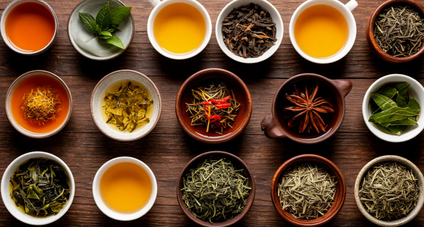Содержание статьи
Какие бывают чаи?
Многие виды чая, который мы пьем, не имеют ничего общего с камелией китайской (так правильно называть чайный куст). Сейчас чаем называют почти любой напиток, имеющий в основе отвар листьев, цветов, ягод, фруктов или специй. Но мы сначала разберем аутентичные виды китайского чая, а продолжим список остальными разновидностями заварных напитков.
Истинный чай: напитки из чайного листа
Сколько существует видов настоящего чая? Базово — шесть: отличаются они не столько цветом, сколько технологией приготовления и вкусовыми качествами.
Чёрный
| 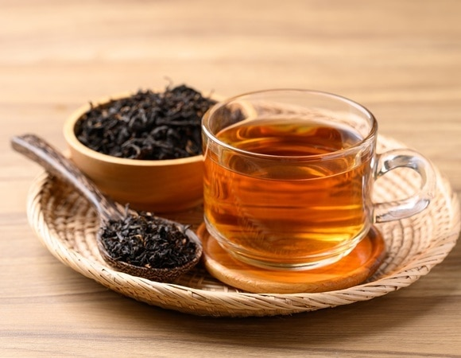 | Самый любимый напиток в Европе и России (кстати, в Китае его называют красным). Его пряного, насыщенного, чуть терпковатого вкуса добиваются путем сильной ферментации собранных листьев и почек. |
Улун
| 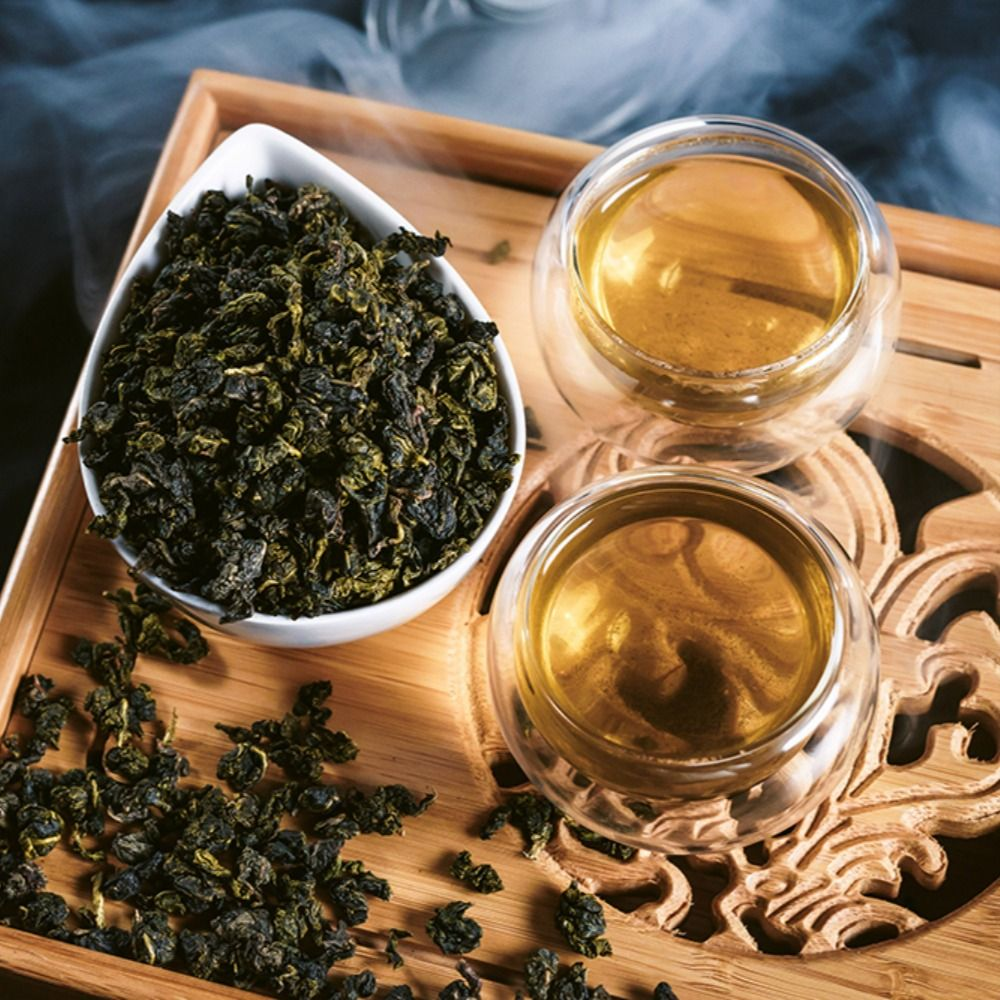 | Сюда входит полный спектр полуферментированных чаев — от тех, которые ближе к зеленому, до «уже почти черных». Их любят за интенсивный, сладковатый, чуть дымный аромат. |
Зелёный
| 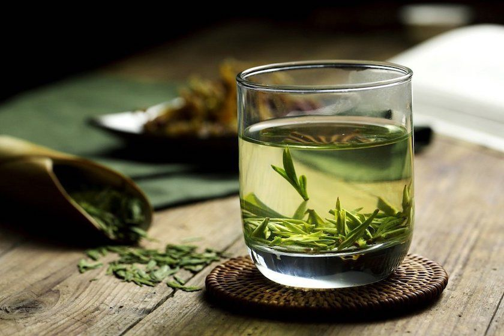 | Его ферментируют гораздо меньше, причем для приготовления используют только верхние 2 листа и нежные почки. Этот напиток — источник антиоксидантов и обладатель выраженного травянистого, горьковатого вкуса. |
Жёлтый
| 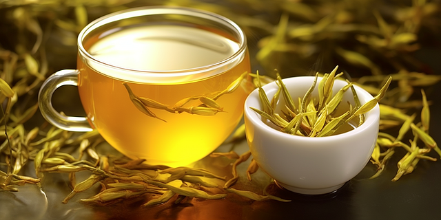 | Самый редкий из всех видов китайского чая, готовится только из почек, но ферментируется чуть больше, чем белый. По вкусу — золотая середина между белым и зеленым. Считается, что настоящий желтый чай можно купить только в Китае. |
Белый
 |
Изготавливают только из нежных чайных почек, без листьев, и ферментируют очень слабо. На вкус он самый нежный, ароматный, с пикантной кислинкой, и кстати — лидер по содержанию антиоксидантов. |
Пуэр
| 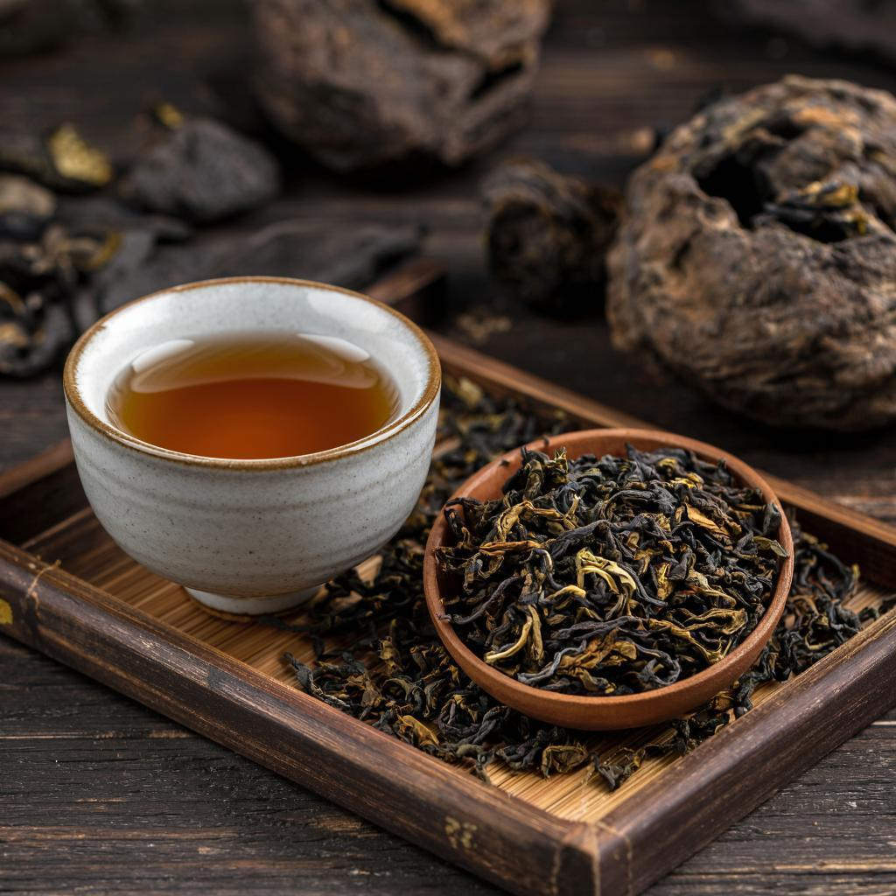 | Постферментированный напиток из почек, листьев и иногда черенков. После обычной обработки сырье прессуют и дают дозреть в течение 45–65 дней (Шу) или 10 лет и более (Шен). После выдержки у чая появляется удивительно яркий вкус с оттенками шоколада, орехов, дыма, а также мокрой земли, грибов и трав. |
Не-чай: разновидности напитка на другой основе
Сегодня чаем называют практически любую траву или растение, которое заваривают для питья. Среди них есть несколько популярных типов.
Ройбуш
| 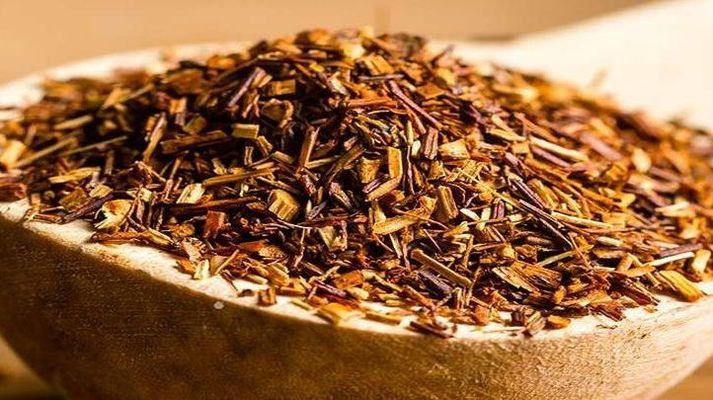 | Африканский напиток из стеблей и листьев аспалатуса, низкого колючего кустарника. Это напиток без кофеина, чуть сладковатый и очень травянистый на вкус. |
Мате
| 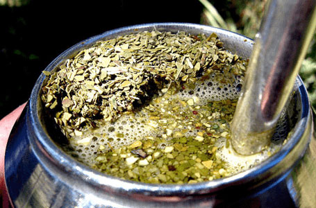 | Напиток из листьев парагвайского дуба — травянистый, плотный, густой, с высоким содержанием матеина (тот же кофеин). |
Каркаде
| 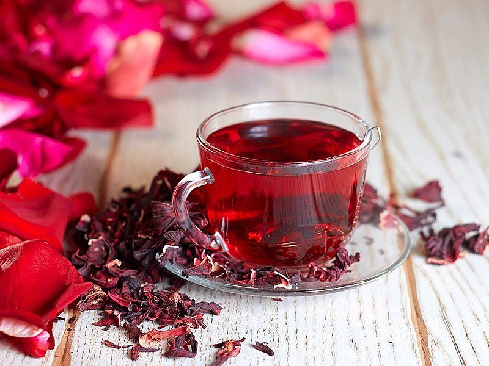 | Отвар цветов гибискуса, напоминает компот. Имеет ярко-красный цвет, кисло-сладкий вкус, тонизирует за счет высокого содержания витамина С, а не кофеина. |
Травяные
| 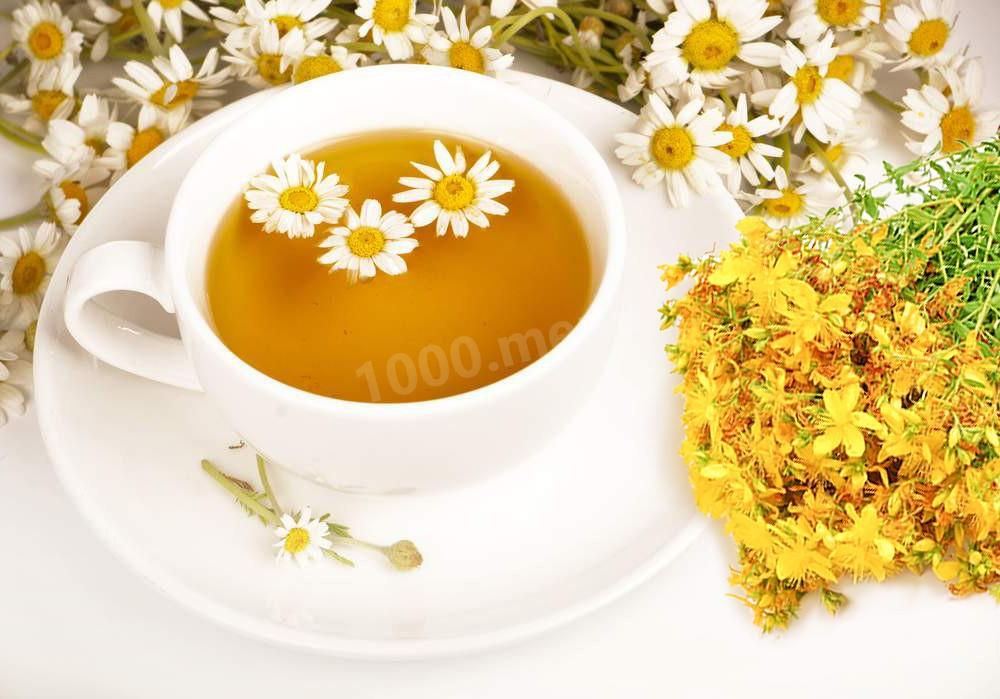 | Цветки ромашки и зверобоя, тимьян, душица, зеленый базилик, листья малины и смородины — какие только травы не годятся для напитка! Список трав, подходящих для заваривания, никогда не будет полным. Но все это, строго говоря, особый вид чая, который называют отваром, или фиточаем. И у разных сборов будут разные полезные свойства! |
Имбирные
| 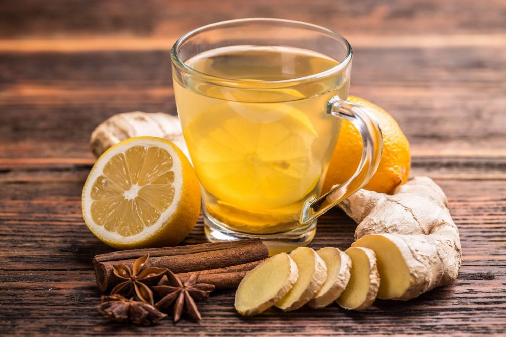 | Часто основу для отвара составляет корень имбиря с добавлением трав и ягод. Острый, пряный, ароматный напиток с противовоспалительным эффектом. |
Фруктово-ягодные
| 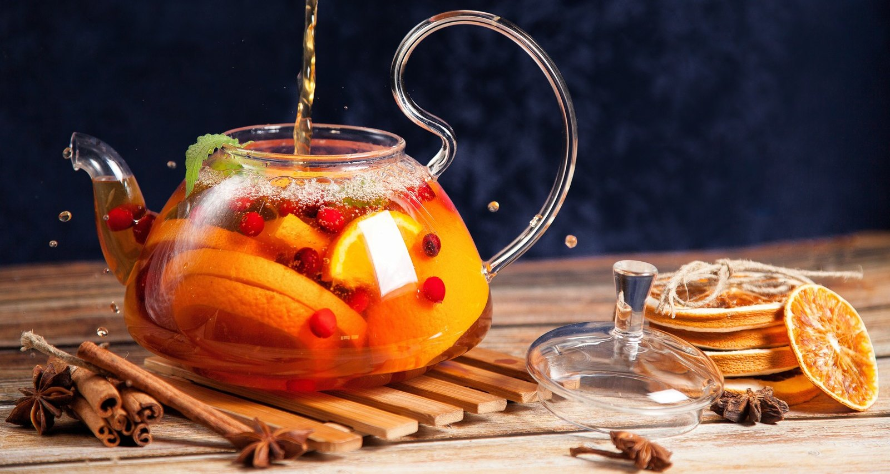 | А здесь в основе напитка подсушенные цитрусовые, яблоки, ягоды (от барбариса до клубники), сублимированная слива, реже — порошок из сушеных плодов. |
Гречишные
| 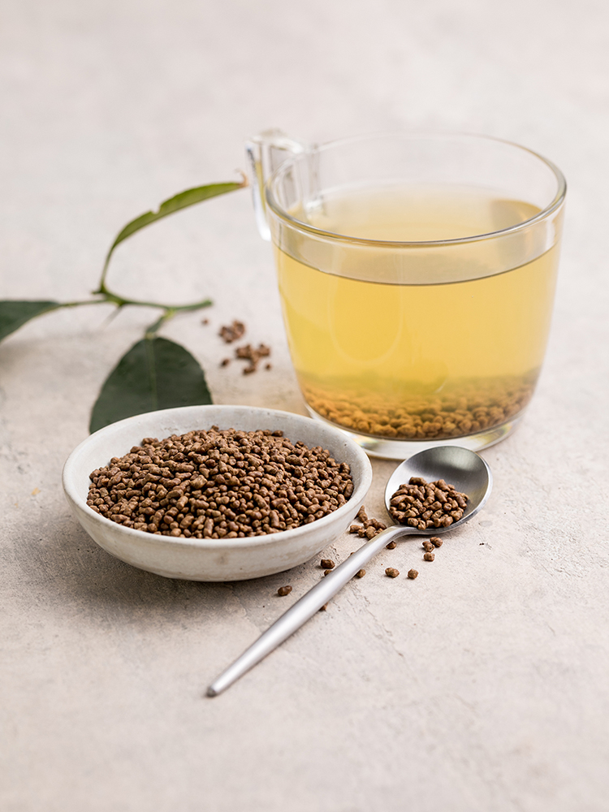 | Заваривается не из привычной нам гречки, а из татарской черной гречихи. Вкус ее более нежный и мягкий, чем у гречки «на кашу». Родом этот напиток из Китая, и ценят его больше всего за пользу для организма. |
Синие
| 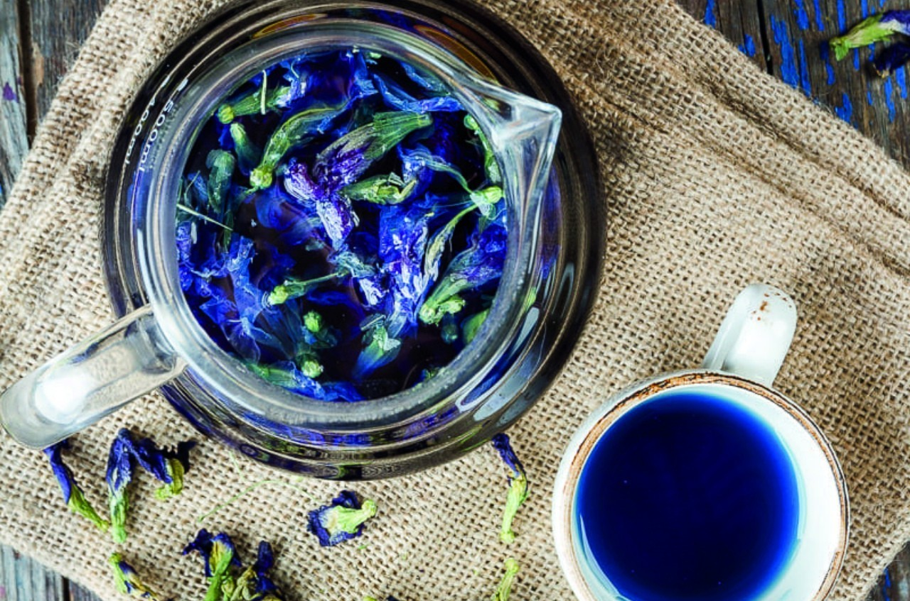 | Тайский синий чай — напиток из цветов клитории тройчатой, или тайской орхидеи. Цветы дают сильный пряный аромат и такой интенсивный цвет, что отвар поначалу кажется негодным для питья. Однако он очень полезен для нервной системы, благотворно воздействует на кожу и используется в традиционной тайской медицине. |
Разные способы обработки листа
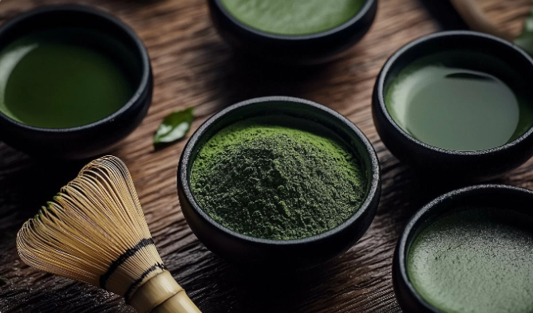Крупнолистовой: из цельных или крупно нарезанных листьев
Среднелистовой: из нарезанных листьев
Мелколистовой: листья нарезаются мелко
Пыль: лист как будто истерт в порошок
Что мы завариваем? Форматы продукта из чайного листа
Порошковый
 |
Выглядит как чуть подкрашенная пудра (классический пример — матча). При заваривании нужно взбивать его венчиком или капучинатором, а в самом напитке должна быть равномерная взвесь. |
Рассыпной
| 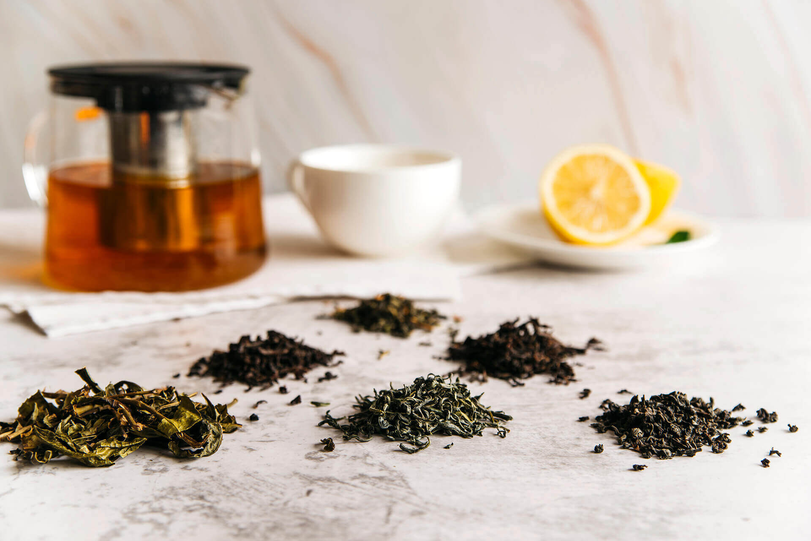 | Самый привычный формат: отдельные листья или их части. Удобнее всего заваривать их во френч-прессе, чтобы чаинки не напросились в чашку. |
Связанный
| 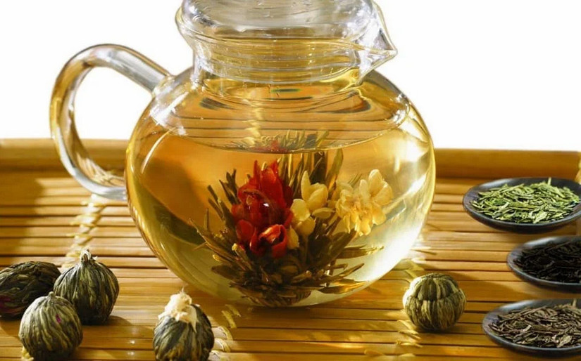 | По сути, тот же рассыпной, просто декоративно оформленный: когда листья собирают в пучок, чтобы при заваривании они раскрылись и образовали «цветок». Очень медитативное занятие: следить за тем, как в заварнике из шарика или пучка получается красивая хризантема. |
Прессованный
| 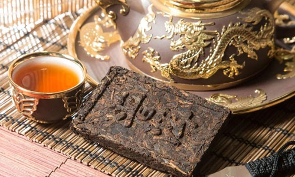 | Своеобразные брикеты из сжатых, спрессованных чайных листьев. Часто в таком виде продается пуэр, и тогда порцию для заваривания приходится откалывать чуть ли не зубилом, как пармезан. |
Пакетированный
| 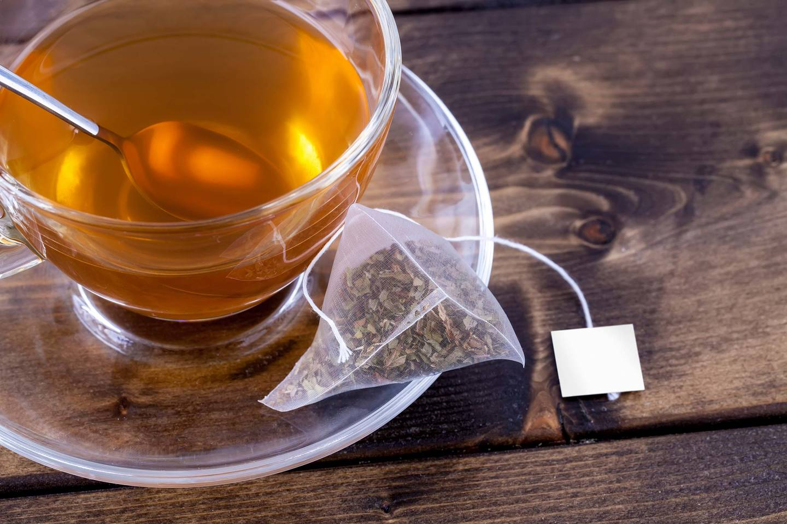 | Экспресс-вариант для кофе-брейков и поездок: пирамидки, капсулы, стики, пакетики — и хотя он немного уступает по вкусу рассыпному чаю, не нужно думать, что условный «Гринфилд» всегда проигрывает в качестве. Он может быть также очень и очень хорош! |
Экстрактный
| 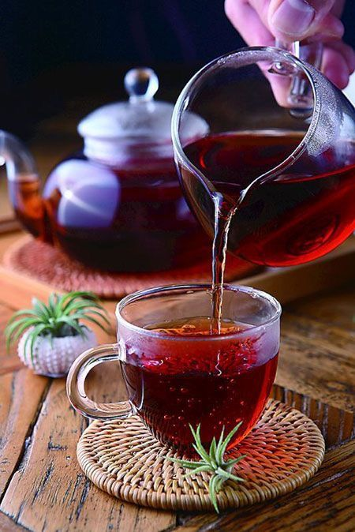 | Это скорее сироп с добавлением трав: ароматную жидкость наливают сразу в горячую воду. Такой напиток сложно назвать полностью натуральным: почти всегда в нем есть консерванты и искусственные добавки. |
Комковый
 |
И рассыпной, и в то же время прессованный. В таком формате можно встретить пуэр и некоторые виды зеленого чая. |
"Чай возвышает вкус и помогает достичь утонченности воли."